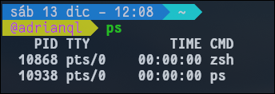
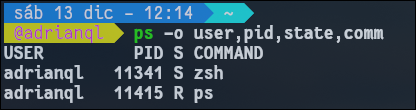
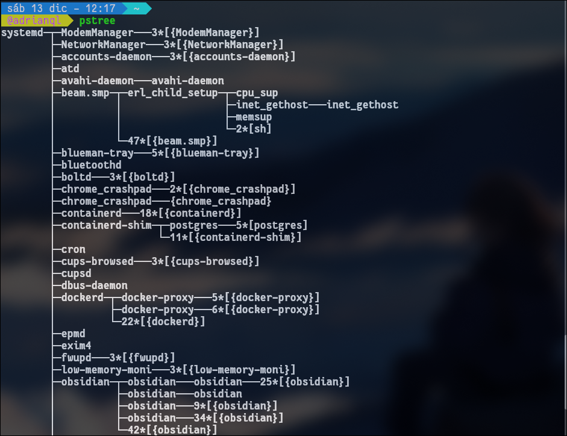
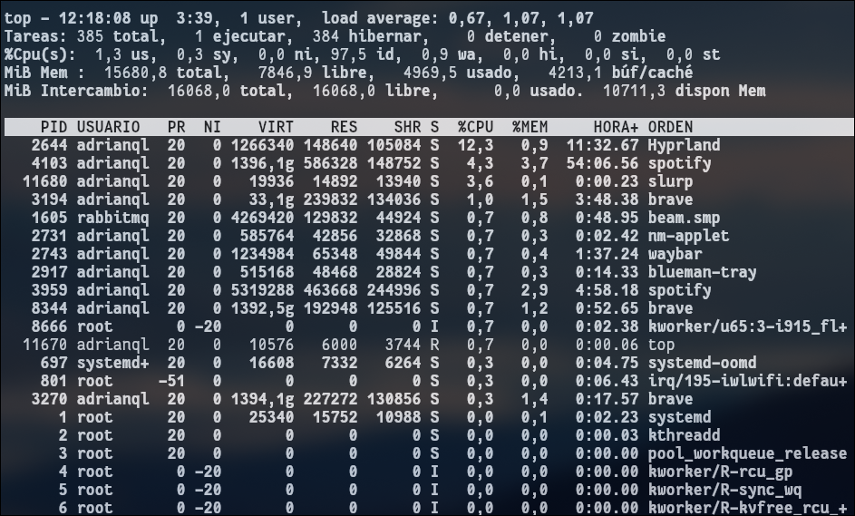
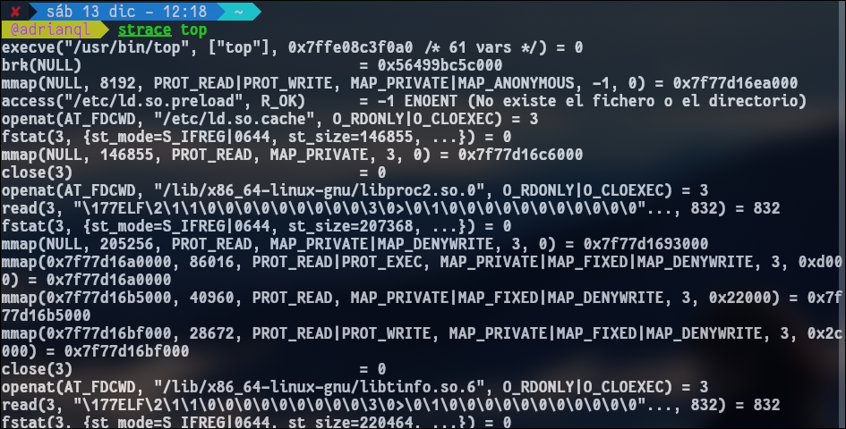
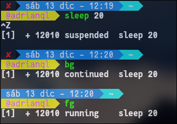
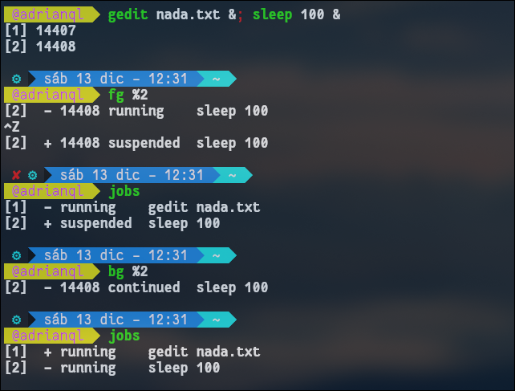
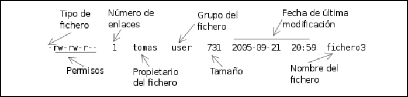
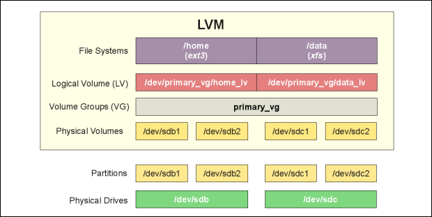
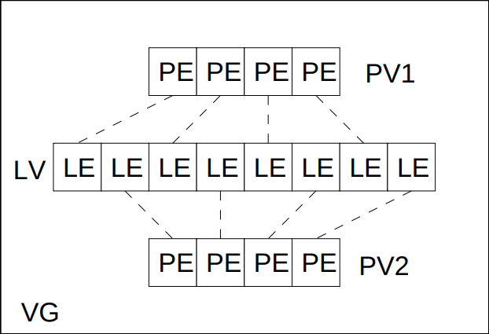

ASR · curso 3
6. Actividades Administrativas Básicas
6.1 Gestión de procesos
Un proceso no es más que una instancia de un programa en ejecución. Imagina que el programa (en el disco duro) es una receta de cocina, y el proceso es "estar cocinando esa receta" en este momento.
6.1.1 Conceptos Fundamentales
El Planificador (Scheduler) del Kernel es el "jefe de cocina". Decide qué proceso entra a la CPU y cuánto tiempo se queda.
-
Proceso vs. Hilo (Thread):
- Proceso: Es pesado. Tiene su propio espacio de memoria aislado. Si uno falla, los demás suelen seguir vivos.
- Hilo (Subproceso): Es ligero. Viven dentro de un proceso y comparten memoria y recursos. Si un hilo corrompe la memoria, puede tumbar todo el proceso.
-
Afinidad de Núcleo: Mover un proceso de un núcleo (Core A) a otro (Core B) es costoso ("cache miss"). El sistema intenta evitarlo.
6.1.2 Ciclo de Vida y Estados
Los procesos no solo están "ejecutándose" o "parados". Tienen un ciclo de vida complejo.
| Código | Estado | Significado para el Admin |
|---|---|---|
| R | Running | Está en la CPU o en la cola listo para entrar ya. |
| S | Sleep (Interruptible) | Durmiendo. Espera algo trivial (que teclees algo, un temporizador). |
| D | Disk Sleep (Uninterruptible) | Peligroso. Espera al Hardware (Disco/Red). No se puede matar con kill -9 hasta que el hardware responda. |
| T | Stopped | Pausado manualmente (Ctrl+Z o señal SIGSTOP). |
| Z | Zombie | Muerto viviente. El proceso terminó, pero su proceso "padre" no ha leído su estado de salida. No consumen RAM ni CPU, solo un hueco en la tabla. |
6.1.3 Monitorización: "Ver qué pasa"
Herramientas Estáticas (ps, pstree)
ps toma una "foto fija" del momento actual.
Sin opciones, ps sólo muestra los procesos lanzados desde el terminal actual y con el mismo EUID que el usuario que lo lanzó

Sintaxis Clave (Trucos):
- Estilo UNIX (con guion):
ps -efMuestra todo con detalles (formato estándar). - Estilo BSD (sin guion):
ps auxMuestra todo incluyendo consumo de CPU/MEM y procesos sin terminal. - Personalizado:
ps -eo pid,user,cmd --sort -%mem(Muestra PID, usuario y comando ordenado por consumo de RAM).
Algunas opciones:
-e: muestra todos los procesos-u usuario: muestra los procesos de un usuario-o formato: permite definir el formato de salida, por ejemplo

pstree: Muestra la jerarquía. Fundamental para ver quién es el padre de quién (y entender por qué si matas al padre, mueren los hijos).

Herramientas Dinámicas (top)
top es un monitor en tiempo real. En la cabecera podemos ver la hora actual, tiempo que el sistema lleva encendido, el número de usuarios conectados y la carga media del sistema para los últimos 1, 5, y 15 minutos. El número total de tareas y resumen por estado y el estado de ocupación de la CPU y la memoria. En un sistema de n núcleos el máximo de uso de CPU es n × 100 %.

Debug avanzado: strace
Si un proceso falla y no sabes por qué, strace -p PID te muestra las "tripas": todas las llamadas que el proceso le hace al Kernel (abrir archivos, leer memoria, etc.).

6.1.4 Control y Señales: "Mandar órdenes"
No "matamos" procesos, les enviamos señales. El proceso recibe la señal y decide qué hacer (salvo con SIGKILL).
kill -l lista el conjunto de señales
| ID | Nombre | Atajo Teclado | ¿Qué hace? | Descripción |
|---|---|---|---|---|
| 15 | SIGTERM | kill PID |
"Termina, por favor" | Recomendada. Permite al proceso guardar datos y cerrar ficheros antes de salir. |
| 9 | SIGKILL | kill -9 PID |
"¡MUERE!" | Brutal. El Kernel arranca el proceso de la CPU. Puede corromper datos. |
| 2 | SIGINT | Ctrl + C |
Interrumpir | Cancela el comando actual en terminal. |
| 1 | SIGHUP | - | Recargar | Se usa para reiniciar daemons y que relean su configuración sin detenerse. |
| 20 | SIGSTOP | Ctrl + Z |
Pausa | Detiene el proceso y lo deja en segundo plano (estado T). |
Comandos de Envío
kill [señal] PID: Envía señal a un ID específico.pkill nombre: Mata procesos buscando por nombre (ej:pkill firefox).killall nombre: Mata todos los procesos con ese nombre exacto.
Info
Con pgrep buscamos en la lista de procesos para localizar el PID a partir del nombre (similar a ps | grep)
pgrep sshd # devuelve el PID del proceso sshd de root
exec ejecuta un comando reemplazado al shell desde el que se lanza. Por ejemplo si te tiras en la terminal un exec ls tu terminal va a morir, porque se va a convertir en un ls.
-
Situación inicial: Estás sentado. El Camarero (tu Shell, digamos
bash) está esperando una orden. -
La Orden: Tú le dices:
exec ls.- Traducido: "Camarero, quiero que dejes de ser camarero y te transformes en el comando 'Listar Archivos'".
-
La Transformación: El Camarero desaparece. En su lugar, aparece el programa
ls(que es muy simple y rápido). -
OJO: Ya no hay Camarero. Solo está
ls.
1. Ejecución normal (sin exec): Tú le pides un café al Camarero.
- El Camarero (Shell) llama a un Ayudante (Proceso hijo).
- El Ayudante va a por el café.
- El Camarero se queda esperando en tu mesa hasta que el Ayudante vuelve.
- Resultado: Tienes al Camarero Y al Ayudante ocupados. Cuando el ayudante acaba, el Camarero sigue ahí para pedirle otra cosa.
2. Ejecución con
exec(El suicidio del camarero): Tú usasexec. Le dices al Camarero: "Conviértete en una Cafetera".
- El Camarero se quita el uniforme, desaparece y se transforma en la Cafetera.
- Ya no hay Camarero. Solo hay Cafetera.
- La Cafetera hace el café.
- Cuando el café está listo y la Cafetera se apaga... ¿quién te atiende? ¡Nadie! El Camarero desapareció para convertirse en Cafetera.
- Por eso, se cierra la ventana. Se acabó el servicio.
Segundo Plano (Background)
Ideal para scripts largos o tareas que no quieres esperar.
- Lanzas con
&:backup.sh & - Si ya lanzaste, pausas con
Ctrl+Zy mandas al fondo conbg. - Recuperas al frente con
fg. nohup: Vital si vas a cerrar la terminal y no quieres que el proceso muera (inmune a SIGHUP).

El comando jobs permite ver la lista de comandos en background lanzados desde el shell, así como su estado (fg y bg pueden actuar sobre uno de los jobs identificándolo por su número).

6.1.5 Prioridades: nice y renice
Linux es "democrático" pero permite favoritismos.
- Rango: De -20 (Máxima prioridad / "Egoísta") a +19 (Mínima prioridad / "Amable").
- Por defecto: Los procesos nacen con 0.
| Comando | Uso | ¿Quién puede usarlo? |
|---|---|---|
nice |
Al arrancar: nice -n -5 comando |
Solo Root puede poner valores negativos (prioridad alta). |
renice |
Ya ejecutándose: renice 10 -p PID |
Usuarios normales solo pueden bajar prioridad (hacerse más nice). |
Info
ulimit El comando interno de bash ulimit permite controlar los recursos de los que dispone un proceso arrancado por el shell. ulimit [opciones] [limite]
6.1.6 Recursos y el Sistema /proc
/proc y /sys (Sistemas de Archivos Virtuales)
No están en el disco duro, están en la RAM. Son la ventana para ver los datos del Kernel en vivo.
/proc/cpuinfo: Qué procesador tienes./proc/meminfo: Cuánta RAM hay libre./proc/1234/: Directorio con toda la info del proceso con PID 1234 (sus ficheros abiertosfd, su memoriamaps).
Análisis de Rendimiento (Cheatsheet)
-
¿Cuánto lleva encendido?
uptime(mira el load average). -
¿Quién consume RAM/CPU?
top(ohtopsi está instalado). -
¿Tengo memoria libre?
free -h(Mira la columna available, no solo free). -
¿Qué hacen los usuarios?
w.
6.2 Gestión del sistema de ficheros
En UNIX/Linux, la filosofía base es que todo objeto es un fichero. Esto incluye desde documentos de texto hasta dispositivos de hardware (donde leer datos es recibir input y escribir órdenes es enviar output).
Tenemos múltiples comandos para trabajar con ficheros y directorios: ls, rm, cp, mv, mkdir, rmdir, touch, etc.
6.2.1 Tipos de ficheros y operaciones
El sistema define siete tipos distintos. Se pueden identificar usando el comando file o mirando el primer carácter de ls -l.
| Tipo | Carácter (ls -l) | Descripción | Creación / Borrado |
|---|---|---|---|
| Ficheros Regulares | - |
Archivos usuales (texto, binarios, imágenes). | touch, cp, vi / rm |
| Directorios | d |
Contenedores de referencias a otros ficheros. | mkdir / rmdir, rm -r |
| Enlaces Simbólicos | l |
Punteros a otros ficheros (accesos directos). | ln -s / rm |
| Dispositivos Caracteres | c |
Hardware con E/S byte a byte (ej. teclado). | mknod / rm |
| Dispositivos Bloques | b |
Hardware con E/S por bloques (ej. discos). | mknod / rm |
| Tuberías (Named Pipes) | p |
Comunicación entre procesos (FIFO). | mknod / rm |
| Sockets | s |
Comunicación de procesos en red. | socket() / rm |
Nota: El comando file [nombre_fichero] analiza el contenido para determinar qué es (ej. PDF, ASCII, PNG).
6.2.2 Gestión de Enlaces
Los enlaces permiten acceder a un mismo contenido con diferentes nombres. Se gestionan con el comando ln.
Enlaces Duros (Hard Links)
-
Concepto: Es un nombre adicional para el mismo inodo (referencia física en disco).
-
Características:
- Todos los enlaces duros son el fichero original.
- El fichero no se borra hasta eliminar todos sus enlaces.
- No pueden cruzar particiones (deben estar en el mismo sistema de ficheros).
-
Comando:
ln destino nombre_enlace
Enlaces Simbólicos (Soft Links)
-
Concepto: Un fichero pequeño que contiene la ruta hacia otro fichero.
-
Características:
- Si se borra el original, el enlace queda "roto" (apunta a nada).
- Pueden apuntar a ficheros en otras particiones.
-
Comando:
ln -s destino nombre_enlace
6.2.3 Atributos de un Fichero
Toda la metainformación se puede consultar con ls -l.
Estructura de ls -l
Ejemplo: -rw--r--r-- 2 luis luis 12 Sep 22 20:19 fichero
- Tipo: 1er carácter (
-,d,l...). - Permisos: Siguientes 9 caracteres (ej.
rw-r--r--). - Enlaces: Número de enlaces duros (o subdirectorios si es un dir).
- Usuario: Propietario (
u). - Grupo: Grupo propietario (
g). - Tamaño: En bytes (usar
ls -lhpara verlo en KB/MB). - Fecha: Última modificación (
mtime). - Nombre: Hasta 255 caracteres (evitar espacios y especiales).

Tipos de Fechas (Timestamps)
Linux guarda tres marcas de tiempo para cada fichero:
- mtime: Modificación del contenido (por defecto en
ls -l). - atime: Último acceso/lectura (
ls -l --time=atime). - ctime: Cambio de estado o metadatos, como permisos (
ls -l --time=ctime).
6.2.4 Permisos y Seguridad
Operaciones Básicas (r, w, x)
El efecto de los permisos cambia si se aplica a un fichero o a un directorio:
| Permiso | En Fichero | En Directorio |
|---|---|---|
| Lectura (r) | Abrir y leer contenido. | Listar contenido (ls). |
| Escritura (w) | Modificar o truncar contenido. | Crear, borrar o renombrar ficheros dentro. |
| Ejecución (x) | Ejecutar como programa/script. | Entrar en el directorio (cd). |
Categorías de Usuarios
-
User (u) - El Dueño:
- Es el propietario del fichero. Generalmente, es quien lo creó.
- Analogía: Es tu diario personal. Tú decides quién lo lee.
-
Group (g) - El Equipo:
- Es un conjunto de usuarios que comparten permisos. Si perteneces al grupo "Contabilidad", podrás ver los archivos de ese grupo.
- Analogía: Una pizarra en la sala de reuniones de tu departamento. Tú y tus compañeros de equipo pueden escribir, pero los de otros departamentos no.
-
Others (o) - El Resto del Mundo:
- Cualquier usuario que no seas tú (el dueño) y que no pertenezca al grupo del archivo.
- Analogía: Gente que pasa por la calle frente a la oficina. Quizás puedan mirar por la ventana (leer), pero no entrar (ejecutar) ni reordenar los muebles (escribir).
Modificación de Permisos: chmod
Solo el propietario o root pueden cambiarlos.
Modo Simbólico Formato: quien operacion permiso
- Quien:
u,g,o,a(all). - Op:
+(añadir),-(quitar),=(fijar). - Ejemplo:
chmod u+x archivo(añade ejecución al dueño).
Modo Numérico (Octal) Se suma el valor de los permisos deseados:
-
r= 4 -
w= 2 -
x= 1 -
h= 0 -
Ejemplo:
chmod 750 archivo- Usuario (7): 4+2+1 (rwx)
- Grupo (5): 4+1 (r-x)
- Otros (0): ---
Permisos Especiales
Afectan a la ejecución y seguridad del sistema. Funcionan mediante UID (User ID) y GID (Group ID), los números internos que Linux usa para identificar usuarios y grupos.
Regla visual (Mayúsculas vs Minúsculas): Estos permisos se "superponen" visualmente sobre el permiso de ejecución (x).
- Minúscula (
s,t): El permiso especial está activo Y hay permiso de ejecución (x). (Correcto). - Mayúscula (
S,T): El permiso especial está activo PERO NO hay ejecución. (Suele ser un error o inútil; piensa en Stop).
Ejemplo: Cuando haces un ls -l, tú ves luis, pero el sistema internamente está chequeando el número 1001.
| Permiso | Letra | Valor Octal | Descripción |
|---|---|---|---|
| SetUID | s / S |
4000 | El proceso se ejecuta con los permisos del propietario (ej. passwd). Se ve en el bloque de User. |
| SetGID | s / S |
2000 | Archivos: Se ejecuta con permisos del grupo. Directorios: Los archivos nuevos heredan el grupo de la carpeta. Se ve en el bloque de Group. |
| Sticky Bit | t / T |
1000 | Usado en directorios (ej. /tmp). Solo el dueño del archivo puede borrarlo, aunque otros tengan permiso de escritura. Se ve en el bloque Others. |
- Fijar:
chmod u+s file,chmod g+s file,chmod +t dir.
Info
Identificadores Reales vs. Efectivos (RUID vs. EUID) Aquí es donde entra la "magia" de los permisos en procesos. Cuando ejecutas un programa, este tiene una "identidad".
- UID Real (RUID): Es quién eres realmente. Es el ID del usuario que lanzó el proceso (tú logueado en la terminal).
- UID Efectivo (EUID): Es con qué permisos estás actuando en ese momento preciso. Determina qué puedes hacer.
La Analogía del Actor
- Real: Eres el actor (Juan).
- Efectivo: Te pones un uniforme de Policía para una escena. Mientras llevas el uniforme (Efectivo), la gente te trata como policía y tienes "permisos" de policía, aunque en realidad sigues siendo Juan.
El caso práctico: Cambiar tu contraseña
El fichero donde se guardan las contraseñas (/etc/shadow) solo puede ser modificado por root. Tú (usuario normal) no tienes permiso. ¿Cómo cambias tu contraseña entonces usando el comando passwd?
- Lanzas el comando
passwd. - RUID: Eres tú (usuario normal).
- Efectivo (EUID): El comando tiene un permiso especial (SetUID) que hace que, momentáneamente, tu "uniforme" sea el de root.
- Como tu ID efectivo es root, el sistema te deja escribir en el fichero protegido.
- Al terminar, el proceso muere y tú sigues siendo un usuario normal.
Cambio de Propiedad
chown usuario fichero: Cambia el propietario.chgrp grupo fichero: Cambia el grupo.chown usuario:grupo fichero: Cambia ambos a la vez.
6.2.5 Localización de ficheros
El comando find
Buscan en tiempo real recorriendo el árbol de directorios. Sintaxis: find [ruta] [expresión]
Criterios de búsqueda comunes:
-name "patron": Por nombre (usar comillas).-type [f/d/l...]: Por tipo de fichero.-user / -group: Por propietario.-size [+n/-n]: Por tamaño (k,M,G).-mtime [+n/-n]: Por días de modificación.-perm: Por permisos.
Acciones y Operadores:
-exec comando {} \;: Ejecuta un comando sobre cada resultado ({}es el fichero).- Operadores lógicos:
-o(OR),!(NOT),-a(AND implícito).
Ejemplos:
A. Buscar por nombre (ignorando mayúsculas/minúsculas): Imagina que perdiste un informe, pero no sabes si lo guardaste como Informe.txt, informe.pdf, etc.
find /home/luis -iname "informe*"
Explicación: Busca en la carpeta de luis cualquier fichero que empiece por "informe" (la
ideinamehace que le de igual mayúsculas o minúsculas).
B. Buscar "ficheros fantasma" (muy pesados): Quieres limpiar el disco y buscas archivos de más de 100 Megas.
find / -size +100M
Explicación: Busca en todo el sistema (
/) ficheros con tamaño mayor (+) a 100 MB.
C. Buscar por usuario y borrarlos (Cuidado con este): Un empleado llamado "pepe" se fue y quieres buscar todos sus archivos temporales en /tmp y borrarlos automáticamente.
find /tmp -user pepe -exec rm {} \;
Explicación:
- Busca en
/tmp.- Criterio: pertenecen al usuario
pepe.- Acción:
-execejecuta el comandorm(borrar).{}: Linux sustituye estos corchetes por el nombre de cada archivo que encuentra.
D. Buscar ficheros modificados recientemente: ¿Qué ficheros se modificaron en los últimos 2 días en la carpeta /etc? (Útil para saber si un virus o una actualización tocó algo).
find /etc -mtime -2
Explicación: Busca en configuración (
/etc) por tiempo de modificación (mtime) de menos de 2 días (-2).
Otros comandos de búsqueda
which: Busca ejecutables en las rutas del$PATH.whereis: Busca binarios, fuentes y páginas de manual.locate: Búsqueda instantánea usando una base de datos indexada (requiere actualización previa).
6.3 Gestión de Discos y Particiones
6.1.1 Particiones y Sistemas de Ficheros
Para añadir un nuevo disco a un sistema Linux ya instalado, el proceso obligatorio sigue siempre estos tres pasos secuenciales:
- Particionamiento: Dividir el disco físico en secciones lógicas (
fdisk) - Creación del Sistema de Ficheros (Formateo): Organizar los datos dentro de la partición (
mkfs). - Montado: Conectar esa partición al árbol de directorios para poder usarla (
mount)
Paso 1: Creación de Particiones
Antes de guardar datos, debemos definir las fronteras del disco.
Identificación de Dispositivos. Los discos se encuentran en el directorio /dev/.
- SATA/SCSI/USB:
/dev/sdX(ej./dev/sdaes el disco 1,/dev/sdbel disco 2). - NVMe:
/dev/nvmeX(discos SSD modernos).
Herramientas de Particionamiento
El comando fdisk es la herramienta clásica. Requiere permisos de administrador (root).
- Sintaxis:
fdisk [opciones] dispositivo - Opción clave:
-l(lista la tabla de particiones actual)- Ejemplo:
fdisk -l /dev/sdb(muestra particiones sdb1, sdb2...).
- Ejemplo:
Si no se le pone opciones abre un menú interactivo para poder borrar, crear, listar, etc.
El comando parted, que es una herramienta de GNU más avanzada. Permite:
- Crear y borrar particiones
- Redimensionar (cambiar tamaño)
- Copiar y comprobar particiones
[!Lección de Historia for fri] Imagina que Unix es el latín de los sistemas operativos: es la "lengua madre" de la que derivan casi todos los modernos (Linux, macOS, Android, iOS...), excepto Windows.
Unix nació a finales de los 60 en los Bell Labs (propiedad de la compañía telefónica AT&T). Sus creadores principales fueron Ken Thompson y Dennis Ritchie (quien también creó el lenguaje de programación C).
Hasta ese momento, cada ordenador tenía su propio sistema operativo incompatible. Unix trajo tres ideas:
- Multiusuario y Multitarea: Varias personas podían usar la máquina a la vez.
- Portabilidad: Estaba escrito en lenguaje C, así que se podía instalar en diferentes máquinas (no solo en una marca).
- La Filosofía Unix: "Haz una cosa y hazla bien".
- En lugar de programas gigantes, usa programas pequeños (
ls,cp,rm) que se unen con tuberías (|).Al principio, Unix se compartía libremente entre universidades. Pero cuando AT&T se dio cuenta de que tenía una mina de oro, cerró el código.
- Unix se volvió "Software Propietario":
- Costaba miles de dólares la licencia.
- No podías ver cómo estaba hecho (código cerrado).
- No podías modificarlo ni compartirlo con tu vecino.
- Empresas como HP, IBM y Sun Microsystems crearon sus propias versiones de Unix (HP-UX, AIX, Solaris), incompatibles entre sí. Aquí entra Richard Stallman. Él trabajaba en el MIT y estaba acostumbrado a la cultura de compartir código. Cuando vio que Unix y las empresas cerraban el software, se enfadó.
Decidió crear un sistema operativo que fuera:
- Técnicamente igual a Unix: Porque Unix era bueno, estable y todos sabían usarlo (los mismos comandos
ls,cd,grep...).- Filosóficamente opuesto: Totalmente libre y gratuito.
El nombre lo dice todo: Llamó a su proyecto GNU = GNU's Not Unix.
- Traducción: "Voy a hacer un sistema que funciona y se siente exactamente igual que Unix, pero NO tiene ni una sola línea de código de AT&T original, por lo que es legalmente libre".
Para visualizarlo mejor, imagina una receta de cocina secreta y famosa:
- Unix (La receta original): Es una hamburguesa deliciosa, pero la receta es secreta, carísima y solo la venden en restaurantes de lujo (Servidores empresariales, Mainframes).
- GNU (El libro de cocina libre): Stallman dijo: "Voy a escribir una receta que sepa igual que la hamburguesa Unix, pero la escribiré desde cero y regalaré el libro". GNU creó el pan, la lechuga, el tomate (las herramientas: compiladores, editores, bash).
- Linux (La carne): A GNU le faltaba la pieza central (el Kernel). Linus Torvalds creó esa pieza en 1991. Aunque el Unix original "puro" casi ha desaparecido, su legado está dividido en dos familias:
|Familia|Estado|Ejemplos| |---|---|---| |Unix Certificado (Descendientes directos)|Código cerrado, comercial, caro.|macOS (sí, el de Apple es un Unix certificado), Solaris, AIX (IBM), HP-UX.| |Tipo Unix (Clones Libres)|Código abierto, imitan a Unix.|GNU/Linux (Ubuntu, Debian, RedHat, Android), FreeBSD.|
Paso 2: Creación del sistema de Ficheros
Una vez creada la partición (ej. /dev/sdb1), está "cruda". Hay que darle una estructura (NTFS, EXT4, etc.) para guardar archivos.
El comando mkfs (Make FileSystem) es un "front-end" (interfaz) que llama a comandos específicos según el tipo deseado.
- Sintaxis:
mkfs.tipo [opciones] dispositivo
| Comando Específico | Sistema de Ficheros | Uso Habitual |
|---|---|---|
mkfs.ext4 (o ext2/3) |
Linux | El estándar actual en Linux. |
mkfs.vfat / mkfs.exfat |
Windows | Compatibilidad con USBs/Windows. |
mkfs.ntfs |
Windows | Discos duros de Windows. |
Caso Especial: La Partición Swap (Intercambio). La memoria Swap actúa como RAM virtual. No usa mkfs normal, tiene sus propios comandos.
- Crear (Formatear):
mkswap /dev/sdb2, prepara la partición y asigna un UUID. - Activar:
swapon /dev/sdb2, hace que el sistema la empiece a usar - Verificar:
swapon -s, muestra el tamaño y prioridad de las swap activas
Paso Intermedio: Identificación Única (UUID)
En linux, los nombres /dev/sda pueden cambiar si cambias los cables de sitio. Para evitar errores usamos el UUID (Identificador Único Universal), que es como la "matrícula" fija de la partición.
- Comando:
blkid(Block ID) - Uso: muestra el UUID y el tipo de sistema de archivos
- Ejemplo:
dev/sda1: UUID="b0f7f038..." TYPE="ext4"
- Ejemplo:
Paso 3: Montado (Mounting)
Para acceder a los datos, la partición debe "colgarse" (montarse) de un directorio existente.
Montaje Manual (mount/unmount):
- Montar:
mount [opciones] dispositivo directorio_destino- Ejemplo:
mout /dev/sdb1 /home2
- Ejemplo:
- Desmontar:
unmount directorio- Ejemplo:
unmount /home2
- Ejemplo:
- Ver montados: El fichero
/etc/mtabcontiene la lista en tiempo real de lo que está montado actualmente
Nota
Si montas un dispositivo sobre un directorio que ya existía, si el directorio tenía archivos, no los vas a ver porque este nuevo dispositivo montado los va a "eclipsar", pero no se van a borrar, una vez lo desmontes se volverán a ver.
Montaje Persistente (etc/fstab):
Para que los discos se monten solos al encender el PC, se configuran en este fichero. Estructura de las columnas en fstab:
- File System: Dispositivo (
/dev/sdb1) o mejor su UUID (UUID=...). - Mount Point: Carpeta donde aparecerá (
/home,/,nonepara swap). - Tipo:
ext4,swap,auto. - Opciones: Reglas de montaje (separadas por comas).
rw/ro: Lectura-Escritura o Solo-Lectura.auto/noauto: ¿Se monta al arrancar?user/nouser: ¿Un usuario normal puede montarlo?defaults: Equivale arw, suid, dev, exec, auto, nouser, async.
- Dump: (0 o 1) Para copias de seguridad antiguas (usualmente 0).
- Pass: (0, 1, 2) Orden de chequeo de errores al inicio (0 = no chequear).
Si un directorio aparece listado en el fstab puede montarse sin especificar el dispositivo.
Mantenimiento y Monitorización
Una vez el sistema está funcionando, el administrador debe vigilar el espacio y la salud de los datos.
Espacio en Disco (df vs du): Es vital no confundirlos:
| Comando | Significado | Qué mide | Opción Clave |
|---|---|---|---|
df |
Disk Free | Muestra espacio libre/usado de particiones montadas. | -h (human readable: GB, MB). |
du |
Disk Usage | Muestra espacio ocupado por archivos y carpetas. | -h (human), -s (summary/resumen total). |
- Ejemplo
df -h: Veo que mi disco duro está al 90% de capacidad. - Ejemplo
du -hs /home: Veo cuánto pesa exactamente la carpeta de usuarios.
Salud del Sistema de Ficheros (fsck): Si el sistema se apaga mal, los ficheros pueden corromperse.
-
Comando:
fsck.tipo [opciones] dispositivo- Ejemplos:
fsck.ext4,fsck.vfat.
- Ejemplos:
-
Opción clave:
-y(Responde "Yes" a todas las reparaciones automáticamente). -
Importante: Nunca ejecutar
fscksobre una partición montada (podrías romper datos).
6.3.2 Sistemas de ficheros LVM
LVM es una capa de abstracción entre el disco físico y el sistema de ficheros. Rompe la rigidez de las particiones tradicionales.
Ventajas principales:
- Flexibilidad: Permite distribuir el espacio disponible sin depender de la ubicación física en el disco.
- Redimensionado en caliente: Puedes aumentar o reducir volúmenes sin apagar la máquina (especialmente útil en servidores).
- Agregación de espacio: Si añades un disco nuevo, puedes sumarlo a tu grupo y "estirar" tus particiones actuales para que ocupen ese nuevo espacio.
Arquitectura y Jerarquía LVM
LVM se organiza en capas, desde lo físico (abajo) hasta lo lógico (arriba).
Las Capas:
- Discos/Particiones Físicas: El hardware real (ej.
/dev/sda1,/dev/sdb). - PV (Physical Volume - Volumen Físico): Es la etiqueta que se le pone a una partición para decirle a Linux "esto será usado por LVM".
- VG (Volume Group - Grupo de Volúmenes): Es una "bolsa de almacenamiento". Agrupa varios PVs en un solo gran almacén de espacio.
- LV (Logical Volume - Volumen Lógico): Son las particiones virtuales que creamos sacando espacio de la "bolsa" (VG). Es el equivalente a
/dev/sda1en el mundo clásico. - Sistema de Ficheros: Formateo final (
mkfs) sobre el LV.

Unidades de Medida: LVM no trabaja bit a bit, sino en bloques:
- PE (Physical Extent): Unidad básica en la que se divide el Volumen Físico.
- LE (Logical Extent): Unidad básica del Volumen Lógico.
- Relación: Generalmente 1 LE = 1 PE.
- Mapeado: La forma en que los LE se guardan en los PE puede ser:
- Lineal: Uno detrás de otro.
- Stripping: Datos distribuidos (mayor rendimiento).
- Mirroring: Espejo (redundancia).

Comandos de Gestión LVM
Los comandos siguen una lógica de nombres muy clara según la capa que gestionen: pv..., vg..., lv....
Comandos de Información (Montorización): Para ver qué tenemos configurado.
| Capa | Comando Detallado | Comando Resumido |
|---|---|---|
| Physical Volume | pvdisplay |
pvs |
| Volume Group | vgdisplay |
vgs |
| Logical Volume | lvdisplay |
lvs |
Comandos de Operación (Crear y Modificar):
-
Gestión de Volúmenes Físicos (PV): Antes de nada, marcamos la partición para usarla
- Crear:
pvcreate /dev/sdc1
- Crear:
-
Gestión de Grupos de Volúmenes (VG): Agrupamos los discos
- Crear:
vgcreate [NombreVG] [Disco1] [Disco2] - Borrar:
vgremove [NombreVG] - Ampliar (Añadir disco):
vgextend [NombreVG] [NuevoDisco] - Reducir (Quitar disco):
vgreduce [NombreVG] [DiscoAQuitar]
- Crear:
-
Gestión de Volúmenes Lógicos (LV): Creamos las particiones útiles.
- Crear:
lvcreate -L[Tamaño] -n [NombreLV] [NombreVG]- Ej:
lvcreate -L4.20G -n testlv NuevoGrupo
- Ej:
- Borrar:
lvremove /dev/GrupoVolmen/testlv(¡Desmontar antes!) - Ampliar (Extend):
- Por tamaño fijo:
lvextend -L12G ...(Fija el total a 12GB). - Sumando espacio:
lvextend -L+1G ...(Añade 1GB al actual). - Por Extents:
lvextend -l+200 ...(Añade 200 bloques lógicos).
- Por tamaño fijo:
- Reducir:
lvreduce(Misma sintaxis que extend, pero reduce).
- Crear:
Uso del Volumen Lógico
Una vez creado el LV, el sistema operativo necesita saber cómo acceder a él
Nomenclatura de Dispositivos: Hay dos formas de llamar a un volumen lógico (ambas llevan al mismo sitio):
- Directa:
/dev/NombreVG/NombreLV(ej./dev/GrupoVolumen/homelv). - Device Mapper:
/dev/mapper/NombreVG-NombreLV.- Nota: El Device Mapper es el componente del kernel que hace la magia de mapear bloques físicos a virtuales. También se usa para cifrado (
dm-crypt).
- Nota: El Device Mapper es el componente del kernel que hace la magia de mapear bloques físicos a virtuales. También se usa para cifrado (
Dar Formato y Montar: Igual que una partición normal
- Formatear:
mkfs.ext4 /dev/GrupoVolumen/homelv - Montar:
mount /dev/GrupoVolumen/homelv /home - Persistencia: Añadir al
/etc/fstab.
Redimensionado del Sistema de Ficheros
Si agrandas un LV (lvextend), el sistema de ficheros que hay dentro (ext4, xfs) no se entera automáticamente. Tienes que "estirarlo" también.
Comando fsadm: Es una herramienta genérica que chequea y redimensiona.
- Sintaxis:
fsadm resize [dispositivo] [nuevo_tamaño] - Ej:
fsadm resize /dev/mapper/Grupo-vol 2048M(Si no pones tamaño, ocupa todo el disponible).
Regla de Oro del Redimensionado:
- Para Agrandar: Primero el LVM (
lvextend), luego el sistema de ficheros (fsadmoresize2fs). - Para Reducir: Primero el sistema de ficheros (peligroso), luego el LVM (
lvreduce).
6.4 Gestión de Usuarios y Grupos
6.4.1 Conceptos Básicos de la Cuenta Unix
En Linux, nadie entra sin una cuenta. Una cuenta no es más que una colección de atributos lógicos que definen quién eres y qué puedes hacer.
Componentes de una cuenta
- Username (Login): Nombre único (ej:
pepe). - UID (User ID): Identificador numérico único. El sistema usa esto, no el nombre.
- GID (Group ID): Identificador del grupo principal.
- Password: La credencial de acceso.
- Home Directory: Tu "casa" en el sistema (ej:
/home/pepe). - Shell: El intérprete de comandos por defecto (ej:
/bin/bash).
Tipos de Usuarios
| Tipo | UID Típico | Descripción |
|---|---|---|
| Root (Superusuario) | 0 |
Dios del sistema. Acceso total. |
| Cuentas de Servicio | 1 - 999 |
Usuarios "fantasma" para demonios (ej: apache, lp, mail). Aumentan la seguridad aislando procesos. |
| Usuarios Normales | 1000 - 65535 |
Personas reales. Tienen restricciones. |
6.4.2 Almacenamiento de Información (Los Ficheros)
Toda la gestión de usuarios reside en archivos de texto plano en /etc/
/etc/passwd (Información Pública)
Define a los usuarios. Todo el mundo puede leerlo. Formato: usuario:x:UID:GID:GECOS:home:shell
pepe: Nombre de usuario.x: Indica que la contraseña está oculta en/etc/shadow.1002: UID.1002: GID principal.GECOS: Información extra (Nombre completo, teléfono...)./home/pepe: Ruta del directorio personal./bin/bash: Shell de inicio.
/etc/shadow (Seguridad / Contraseñas)
Solo root puede leerlo. Contiene las contraseñas cifradas y datos de expiración. Formato: usuario:password_cifrado:días_cambio:...
- Si en el password hay
!o*, la cuenta está bloqueada (no puede hacer login). - Guarda fechas de caducidad, días de aviso, etc.
Grupos (/etc/group y /etc/gshadow)
/etc/group: Define qué usuarios pertenecen a qué grupos.- Formato:
nombre_grupo:x:GID:usuario1,usuario2
- Formato:
/etc/gshadow: Contraseñas de grupo (raramente usadas) y administradores de grupo.
6.4.3 Gestión de Cuentas: Creación y Modificación
Método Manual ("The Hard Way")
Útil para entender qué ocurre "bajo el capó". Pasos:
- Editar
/etc/passwd(usarvipwpara bloqueo seguro). - Editar
/etc/shadow(usarvipw -s). - Editar
/etc/group. - Crear directorio home (
mkdir). - Copiar ficheros base desde
/etc/skel(plantilla de inicio). - Ajustar permisos y dueños (
chown,chmod). - Asignar contraseña (
passwd)
Comandos de Bajo Nivel (Estándar Linux)
Son universales pero requieren muchas opciones manuales.
useradd: Crea el usuario (a veces inhabilitado por defecto si no se pasan flags).usermod: Modifica (cambiar shell, grupos, home).userdel: Borra el usuario.groupadd/groupmod/groupdel: Gestión de grupos.
Comandos de Alto Nivel (Debian/Ubuntu)
Son scripts más amigables que hacen preguntas interactivas.
adduser: Pide contraseña, datos GECOS y crea el home automáticamente.deluser: Borra usuario y puede preguntar si borrar el home.
Gestión Masiva
newusers: Crea múltiples usuarios desde un fichero de texto.chpasswd: Actualiza contraseñas en lote (formatouser:pass).
6.4.4 Gestión de Contraseñas y Seguridad
Comandos Clave
-
passwd [usuario]: Cambia la contraseña.-e: Fuerza al usuario a cambiarla en el próximo inicio de sesión.
-
gpasswd: Para cambiar la contraseña de un grupo -
chage: Gestiona la caducidad (expiration) de la contraseña.- Ejemplo: Obligar a cambiar la clave cada 90 días.
-
mkpasswd: Genera un hash cifrado de una cadena (útil para scripts).
Cambiar de Identidad (su vs sudo)
-
su [usuario](Switch User):- Cambia tu sesión a la de otro usuario.
- Si no pones usuario, asume
root. - Requiere saber la contraseña del destino (la de root).
-
sudo [comando](SuperUser DO):- Ejecuta un comando con privilegios de otro (generalmente root).
- Requiere la contraseña del propio usuario (no la de root).
- Se configura en
/etc/sudoers(editar siempre convisudopara evitar romper el sistema).
6.4.5 Módulos PAM (Pluggable Authentication Modules)
Es el "portero" universal de Linux. Es una librería que usan los programas (login, ssh, su) para saber si dejarte pasar o no.
Los 4 tipos de control:
- Auth: ¿Eres quien dices ser? (Pide contraseña, huella, etc.).
- Account: ¿Tienes permiso ahora? (Horario permitido, cuenta no caducada).
- Password: Gestión del cambio de clave (complejidad mínima, no repetir la anterior).
- Session: Qué hacer antes/después de entrar (montar directorios, logs).
6.4.6 Cuotas de Disco
Sistema para evitar que un usuario llene el disco duro.
Tipos de Límites
- Límite Suave (Soft): Puedes pasarte temporalmente.
- Límite Duro (Hard): No puedes escribir ni un byte más.
- Período de Gracia: Tiempo que tienes para volver por debajo del límite suave antes de que se convierta en duro.
Implementación
- Añadir opción
usrquotaogrpquotaen/etc/fstab. - Remontar partición.
quotacheck: Crear los archivos de base de datos de cuotas.quotaon: Activar el sistema.edquota [usuario]: Editar los límites (abre un editor de texto).repquota: Ver informe de uso.
6.5 Gestión de redes de área local
6.5.1 Fundamentos y Nomenclatura de Interfaces
Linux abstrae el hardware de red en "interfaces". No importa si es cobre, fibra o aire, el sistema lo ve como un dispositivo lógico.
Info
En informática, una interfaz es el punto de conexión entre dos cosas distintas. En redes, es el intermediario entre tu sistema operativo (Linux) y el mundo exterior (el cable o el Wi-Fi).
La analogía de la casa: Imagina que tu ordenador es una casa.
-
Los datos son personas dentro de la casa que quieren salir.
-
La red (Internet/LAN) es la calle.
Para salir a la calle, necesitas puertas. Las interfaces son esas puertas.
-
eth0(Ethernet): Es la puerta principal. -
wlan0(Wi-Fi): Es la puerta trasera. -
lo(Loopback): Es como un espejo dentro de la casa. Si le hablas, te respondes a ti mismo (se usa para pruebas internas).
Linux no "habla" directamente con el cable de cobre; le da los datos a la interfaz eth0, y ella se encarga de traducirlos a electricidad.
Nombres de las Interfaces (NICs)
La forma de llamar a las tarjetas de red ha evolucionado:
-
Esquema Clásico (Antiguo): Nombres simples secuenciales.
eth0,eth1: Ethernet (cable).wlan0: Wi-Fi.ppp0: Conexiones punto a punto (módem/VPN).
-
Esquema Predecible (Nuevo): Nombres basados en la ubicación física para evitar que cambien al reiniciar.
- Ejemplo:
enp3s0(Ethernet, Bus PCI 3, Slot 0).
- Ejemplo:
-
Loopback (
lo):- Es una interfaz virtual de "circuito cerrado".
- IP estándar:
127.0.0.1. - Uso: Pruebas internas y comunicación entre procesos de la misma máquina.
6.5.2 Archivos de Configuración Clave
En Linux (específicamente basado en Debian/Ubuntu según tu texto), la red se configura mediante ficheros de texto que lee el servicio networking al arrancar.
| Archivo | Función |
|---|---|
/etc/network/interfaces |
Configuración principal de las tarjetas (IP, máscara, gateway). |
/etc/resolv.conf |
Configuración de los servidores DNS (quién resuelve los nombres). |
/etc/hosts |
"DNS local". Asocia Nombres <-> IPs manualmente. Tiene prioridad sobre el DNS externo. |
/etc/hostname |
Contiene el nombre de la máquina. |
Configuración Estática vs. Dinámica
Se define en /etc/network/interfaces.
A. Estática (Manual) Tú defines todos los valores. Ideal para servidores.
auto eth0
iface eth0 inet static
address 193.144.84.77 # Tu IP
netmask 255.255.255.0 # Máscara de subred
gateway 193.144.84.1 # Puerta de enlace (salida a internet)
B. Dinámica (DHCP) Un servidor externo te asigna la configuración.
auto eth0
iface eth0 inet dhcp
Nota: Se puede forzar la petición DHCP manualmente con el comando
dhclient eth0.
Configuración de DNS (/etc/resolv.conf)
Define a quién preguntar para traducir google.com a una IP.
search usc.es # Si buscas "servidor", probará "servidor.usc.es"
nameserver 8.8.8.8 # Servidor DNS 1
nameserver 8.8.4.4 # Servidor DNS 2 (Backup)
Atención: Si usas DHCP, este archivo suele sobrescribirse automáticamente con lo que diga el servidor DHCP.
6.5.3 Comandos de Gestión y Configuración
ifconfig (Interface Configuration)
Muestra el estado o configura la IP temporalmente (se pierde al reiniciar).
-
Lectura (
ifconfig eth0):- UP / RUNNING: La tarjeta está encendida y tiene cable conectado.
- MTU: Tamaño máximo del paquete (v.g. 1500 bytes).
- RX / TX: Estadísticas de paquetes recibidos/transmitidos y errores.
-
Escritura:
ifconfig eth0 192.168.1.5 netmask 255.255.255.0 up
-
Wireless: Para Wi-Fi se usa su primo hermano
iwconfig(ej:iwconfig eth1 essid "MiWifi").
route (Tabla de Enrutamiento)
Decide por dónde enviar los paquetes.
$ route -n
Destination Gateway Genmask Flags Metric Ref Use Iface
192.168.1.0 0.0.0.0 255.255.255.0 U 0 0 0 eth0
0.0.0.0 192.168.1.1 0.0.0.0 UG 0 0 0 eth0
1. Destination (¿A dónde quieres ir?) Es la dirección final del paquete. Puede ser una dirección concreta o una red entera.
192.168.1.0: Significa "Cualquier ordenador de mi red local (mi casa)".0.0.0.0: Es un comodín. Significa "Cualquier otro sitio que no esté listado arriba" (es decir, Internet).
2. Gateway (¿Quién me ayuda?) Esta es la columna más confusa, pero la más importante.
- Si pone
0.0.0.0(o*): Significa "Nadie". El destino está cerca, conectado directamente a mí por un cable. Puedo gritar y me oyen. No necesito ayuda. - Si pone una IP (ej.
192.168.1.1): Significa que el destino está lejos (en Internet). Yo no sé llegar. Tengo que enviarle el paquete a ese "Gateway" (tu Router) para que él se encargue de llevarlo a Google, Facebook, etc.
3. Iface (¿Por qué puerta salgo?) Por qué tarjeta física va a salir el dato (eth0, wlan0...).
4. Flags:
- U (Up): Ruta activa.
- G (Gateway): Usa un router intermediario.
- H (Host): Ruta a una sola máquina, no a una red.
La estructura general para modificar rutas es:
route [add|del] [default] [-net|-host] destino [netmask máscara] [gw pasarela] [dev interfaz]
netstat (Estadísticas de Red)
Muestra qué puertos están abiertos y quién está conectado.
-
Estados:
ESTABLISHED: Conexión activa transmitiendo datos.LISTEN: Servidor esperando conexiones (ej. un servidor Web).
-
Uso:
netstat -s(estadísticas por protocolo: TCP, UDP, ICMP).
6.5.4 Diagnóstico y Resolución de Problemas
| Comando | Función | Protocolo | Notas |
|---|---|---|---|
ping [ip] |
Comprueba si hay conexión. Mide el tiempo (RTT). | ICMP | Los firewalls pueden bloquearlo. |
traceroute [ip] |
Muestra el camino (saltos) hasta el destino. | UDP + TTL | Si sale *, ese router no responde o tiene firewall. |
host / dig |
Pregunta al DNS la IP de un nombre. | DNS | Útil para saber si falla la red o falla el nombre. |
arp |
Muestra la tabla IP <-> MAC. | ARP | Útil para ver conflictos de IP o problemas de hardware local. |
Info
Un firewall es un sistema (puede ser un programa o un aparato físico) que monitoriza y controla el tráfico de red entrante y saliente. Se coloca entre tu red interna (de confianza) y una red externa (Internet, no confiable).
La Analogía del Portero de Discoteca: Imagina que tu ordenador es una discoteca exclusiva.
-
La Interfaz: Es la puerta de entrada.
-
El Firewall: Es el portero.
-
Las Reglas: El portero tiene una lista.
- "Si viene Luis, déjalo pasar." (Allow)
- "Si viene alguien con zapatillas, no lo dejes pasar." (Deny/Drop)
- "Si viene Luis, déjalo pasar." (Allow)
6.5.5 Conceptos Avanzados
IP Forwarding (Convertir PC en Router)
Por defecto, Linux descarta paquetes que no son para él.
Si activamos el IP Forwarding (ip_forward), Linux cogerá paquetes que entran por una tarjeta y los reenviará por otra. Esto convierte al ordenador en un router.
ip (El comando moderno)
ip unifica a ifconfig, route y netstat. Es más potente y complejo, y es el estándar actual aunque en estos apuntes nos hemos centrado en los clásicos.